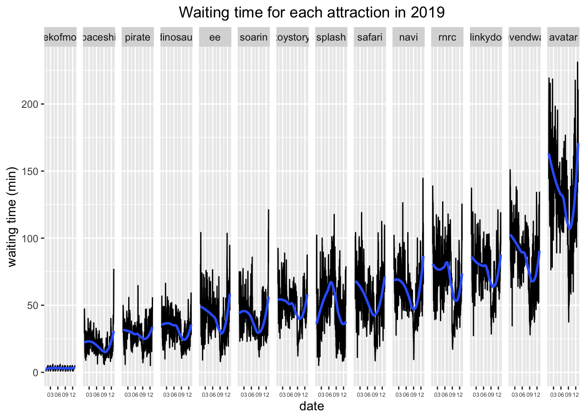

Chapter 5 Results
5.1 Waiting time analysis

In order to have a general idea of the waiting time for different attractions along the year, I choose to map the data of year 2019, since in this way there is no time gaps in the plots.
Among different attractions, Avatar was the most popular attractions in 2019, which required the longest waiting time for about 100 min-175 min. Its waiting time was significantly longer than the others. Spaceship, pirate and dinosaur are the three attractions with the least waiting time for about 20 min-40 min.
Besides, there exists an interesting trend that the waiting time for each attraction seems to decrease gradually from January to September and then increase from September to December. The only exception is the attraction Splash, which has an opposing pattern. The peak waiting time for Splash is around August. It is reasonable since Splash is having a ride over water, therefore people would like to play it more in summer rather than in winter.
It is a good choice to visit Disney in September which yields the shortest waiting time in most attractions over the year.

To map the relationship between the waiting time and weekday, I make the chart above using the waiting time of attraction Soarin in July 2021.
The plot shows that the waiting time has a pattern of having longer waiting time in weekdays and shorter waiting time on weekends which is oppose to the common sense. The waiting time reaches its peak on 8th, 21st, 27th, 28th July which are mainly Tuesday-Thursday and reaches its minimum mainly on Friday, Saturday and Sunday. My assumption for this pattern is Disney tends to close some of the attractions for some time in weekdays but fully open on weekends.
5.2 Ticket price

There were 3 ticket price types, peak,regular and value, and in a particular day there was only one ticket type.
Among all days, regular tickets account for the most proportion, which means people are most likely to get a regular price ticket. From Tuesday to Friday, the proportion of ticket price were similar, besides regular ticket, the proportion of value price ticket is more than peak price ticket. In Saturday, Sunday and Monday, the ticket is more likely to assigned as peak price than the other days and a value price ticket is harder to get.
5.3 Waiting-duration ratio

We pay special attention on the line of waiting time/duration ratio = 1, which means one can enjoy the event with the same waiting time. The waiting time in more than half of the events in Cleveland Disney were less than playing time. However in the popular events, the waiting time were significantly at least 3 times more than playing time. The first 3 popular events, the waiting time were even 9 times more than playing times.

5.5 Seven Dwarf Mining Train waiting time calendar heatmap

This is a calendar heat map for the waiting time of Seven Dwarf Mining Train, a popular ride located in Magic Kingdom of Walt Disney World. From the calendar heat map for the “Seven Dwarf Mining Train” ride of Disney World, we can easily see which days have a high average waiting time and which days have a low waiting time. And by comparing different levels of color fill over years, we can see the overall waiting pattern during a year and find which months have lower average waiting time. And we can also compare across years to see the overall crowdedness of the year. For instance, the color fills for year 2021 are lighter than the other years, which can be considered directly impacted by the current pandemic. The grey colors represent the missing data, since Disney was impacted by Covid-19 and closed from Mar to July in 2021. Some of the data are missing after then.
If we compare across all the years, 2018 and 2019 seem to be the more crowded years. Some peaks in waiting time appear in early January(winter break) and mid March(spring break), as well as late December (Christmas). The averages of waiting time reach the maximum of the spectrum, with a value of around 150 minutes.
And in year 2021, when Covid is more under control, the average waiting time is relatively short from March to May, and gradually increases when summer break starts. And the waiting time decreases again from mid August to September, and increases again in October. However, compared with years before covid, the fill colors are much lighter, meaning that the average waiting time of the ride is shorter.
5.6 Multiple Boxplot of year 2019

This is a multiple box plot of the selected 12 rides in Walt Disney World in Orlando. Because of the pandemic, Disney World was closed from Mar 15 to Jul 10 in 2020. As a consequence, the waiting time data of year 2020 was of less importance of our study and we chose the data of year 2019 and 2021 for comparison. The ride names of the abbreviations can be found in the data folder.
The plot shows the overall distribution of the average waiting of the selected 12 rides, ordered by their medians. The four different colors stand for the four parks that each ride is located. The statistics of each ride is computed from hourly waiting time averages, from Jan 1 to Dec 31.
Comparing the distribution of all rides of the two years, we can see that the average waiting times in 2021 are slightly lower than in 2019. The interquartile ranges of most rides, such as avatar, slinky dog, seven dwarf mining train, splash mountain, and Expedition Everest, have decreasing trends. This may indicate that there are fewer visitors compared with 2019. One possible reason is that the pandemic is still ongoing, compared with 2019 where there were no infection concerns.
What’s more, the medians of most rides also decrease. The ride with the largest drop in median is Avatar Flight of Passage, located in Animal Kingdom. In 2019, the median is about 125 minutes. However, in year 2021, the median largely decreases to 70 minutes. Apart from Avatar, the order of the rides by median also changes across years. Seven Dwarf Mining Train changes from the second place in 2019, with a median of 80 minutes to the third place in 2021, with a median of 60 minutes. The ride “Slinky dog” has a slight decrease of 80 minutes in 2019 to 70 minutes in 2021, but it moves from the fourth place in 2019 to the second place in 2021. And this is mainly caused by the relatively larger decreases in median of other rides.
We can see that all the rides have outliers in the right tails, meaning that there are lots of occurrences with waiting time much longer than usual. This may happen during holiday seasons. Indeed, Avatar has the longest waiting time out of all attractions, with a waiting of around 350 minutes in 2019! Besides, rides such as seven dwarf mining train, Rock’n’Roller Roaster and Splash Mountain have extreme outliers on the right end, which are far from the interquartile range. The distribution of waiting time of these 12 rides are mostly right skewed. This means that most of the shorter waiting times are clustered together, while the longer ones are more scattered. Rides such as dinosaur and spaceship in year 2021 are especially showing these patterns since they have very short waiting times.
When trying to order the boxplot facets by median of the two different year, we met the problem that the order doesn’t change when using reorder() function. Thanks to the contribution from Dave Robinson on Github for this useful function so that we can reorder the facet boxplots by their medians separately!
The reorder_within() and scale_x_reordered() function comes from : https://github.com/dgrtwo/drlib/blob/master/R/reorder_within.R
5.7 Seven Dwarf Mining Train Weekend/Weekday Pattern
Before studying this dataset, we always believed that waiting time on weekends are longer than on weekdays. The reason is that children are off school and adults are off work on weekends, thus there will be more people in the park.
However, when exploring our data, we are shocked that sometimes the waiting time at weekends are shorter than on weekdays. And this raises our attention and thus we decide to explore more on that.
Our first guess is that this is just the pattern of a given year since we were looking at the data of year 2021. However, when we plot the average yearly data, we find that the waiting time on weekends is still longer than on weekdays.
And thus our second hypothesis is that this is a pattern of summer break. As we all know, the main target audience of Disney World are children and teenagers. Thus we guess that children can visit the park on weekdays, resulting in the lower average waiting time on weekends. As a consequence, we use data from 2015 to 2021 to calculate the average monthly waiting time. From this graph, we can see that apparently our guessing is right. Weekend average waiting time are shorter than weekdays in June, July and August, which are the months of summer break. And this is not only limited to the Seven Dwarf Mining Train ride, but also on many other popular rides as we can see in the following interactive plot.
And in terms of the waiting of time of the day, we can see that the waits are usually shorter at morning and at night, and are relatively higher from 10 am to 17pm. Thus if you want to skip the long line, try to get up and early and be the first one to go in, or you can stay up late and join the line before the park closes.
5.8 Biplot on attraction waiting time and season
A biplot is constructed using Singular Value Decomposition, and is a graphing technique to help us understand relationship between variables. In biplots, the directions of each variable’s axis matter rather than the length of the axis, and the values can be read by projecting onto the axis of the variable. Moreover, points that are clustered together represent close correlations. Similarly, arrows that have similar orientations represent close correlations.
This biplot uses waiting data of the selected 12 rides to perform PCA calculations. For data, we used daily average waiting time of the rides with a time range of Jan 1 2015 to Dec 31 2021. The arrows represent the different rides, where the points represent different holiday seasons. The seasons include popular seasons such as Christmas peak, Summer Break, Easter, Columbus day, but also off-peaks such as winter, spring, September low, etc.
By using a biplot, we can clearly see the relationship between different rides and seasons. The graph shows a key axis for Seven Dwarf Mining Train, which is a popular ride located in Magic Kingdom. The projections of each season on the axis represent the average waiting time during each season. For instance, we can see that Christmas peak has the longest waiting time, with an average of 110 minutes. And September low has the shortest average time for around 60 minutes. Many other seasons are clustered together, ranging from 70 to 95 minutes.
We can also see that the arrow of ride Navigator River Journey is orthogonal to Seven Dwarf Mining Train, which shows that waiting of the two rides are not correlated. Other uncorrelated rides examples are Splash Mountain with rides such as Expedition Everest, Toy Story Mania, etc.
As we can see, there are many clusters of the axes, showing a close relationship of these rides. For instance, Pirates of the Carribean, Slinky Dog Dash, Rock n Roller Roaster and Seven Dwarf Mining Train are clustered together, while Avatar Flight of Passage and Kilimanjaro Safaris form another cluster.
And in terms of the holiday seasons, seasons such as summer break and Jul 4th, spring are clustered together, and peak holidays such as Columbus Day, Christmas, Presidents Week have another cluster. By looking at the biplot, we can clearly understand the relationship between rides and season.
If you want to study more on biplot: https://en.wikipedia.org/wiki/Biplot
5.9 Events in Disney

Comparing between different parks, Epcot holds the most events than the other parks. Epcot International Flower & Garden Festival (epfg) and Epcot International Food & Wine Festival (epfw) are the top 2 events that holds the most in Disney. They are both from Epcot and holds at least two times than other events.
Magic Kindom is the park that provide the most various type of events. It provides Disney Early Morning Magic(emm), Mickey’s Not-So-Scary Halloween Party(mnsshp), Mickey’s Very Merry Christmas Party(mvmcp), Disney After Hours(dah), etc. If we would like to join various events, we may pay more attention to Magic Kindom’s schedule and Magic Kindom can be a better choice.
Besides, Animal Kingdom is the park that holds the least events. Therefore, as toursist, we may expect fewer events hold in Animal Kingdom then others when visiting Disney.
When plotting this graph, we tried to use event frequency in each park as a factor to analyze its relationship with average waiting time of the rides in each park. However, our analysis show that there is not a clear relationship between the two. It shows that visitors’ decisions to visit the park do not depend on the events.
5.10 Park waiting pattern before and after Covid

This graph shows the relationship between average waiting time and month, with respect to years and different parks. As mentioned before, Disney was closed from mid March to Jul 10 in year 2020 because of Covid-19, thus we have some missing data in year 2020. In order to show the change of waiting pattern before and after Covid-19, we selected data from year 2019 and 2021, and use bar plots here to visualize the average waiting times for different months.
First of all, when comparing across rows, we can see that the waiting averages have different patterns for the four parks. Among these parks, Epcot has the shortest waiting time for approximately 30 minutes on average. The waiting pattern is quite uniform but a low in September for 2019, and the average slightly decreases after Covid, with a low of around 15 minutes in August and September in 2021.
Among the four parks, Animal Kingdom and Hollywood Studios are relatively popular in 2019, with waiting time averages around 60 minutes. The average waiting time decreases to around 30 minutes after Covid. In general, the two parks have very similar waiting time distributions in 2019 and 2021.
And for Magic Kingdom, the average waiting time remains similar from 2019 to 2021, with an average around 60 minutes in 2019, and a slight decrease to average of 45 minutes after Covid. The relatively small decrease in waiting average compared to other parks may arise from the fact that the main audience of Magic Kingdom are children, while the others are more targeting towards adults and teenagers.
And when looking at the monthly patterns, we can see that September is the month with the lowest waiting time for all parks and all years, while March, June, July and and August have higher waiting time averages than other months. In 2019, March is a high month, while July in 2021 have higher averages.
By analyzing this graph, we recommend anyone who are planning to visit Disney World, and are free to choose from all months, to visit there in September since there is a pattern that Septembers have shorter waiting times on average. And we can clearly see that crowd of Disney World greatly decrease after Covid.